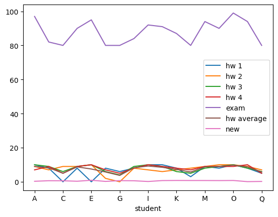
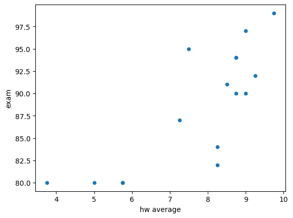

Pandas#
pandas es un módulo que extiende el ndarray de numpy para permitir una estructura de datos que etiqueta las columnas. Tiene dos clases principales, que son:
Series: una estructura unidimensional que puede contener cualquier tipo de datos.DataFrame: una estructura bidimensional que puede contener diferentes tipos de datos en columnas.
El módulo nos permite operar como lo haríamos con una hoja de cálculo, donde el dataframe sería la tabla con los datos.
Pandas nos ofrece gran funcionalidad para análisis de datos, tales como:
Lectura de datos desde diferentes formatos (CSV, Excel, SQL, etc.)
Manipulación y limpieza de datos
Análisis estadístico
Visualización de datos (junto con matplotlib)
La documentación oficial para profundizar está aquí:
http://pandas.pydata.org/pandas-docs/stable/dsintro.html#dsintro
Pandas se importa normalmente con el alias pd:
import pandas as pd
import numpy as np
import matplotlib.pyplot as plt
Serie#
Una serie es un arreglo etiquetado. Superficialmente parece un diccionario, pero tiene un tamaño fijo y puede manejar valores faltantes. También puede ser operado con cualquier operación numpy o los operadores estándar (un diccionario no puede). Las etiquetas se conocen como el índice.
Algunos ejemplos de: http://pandas.pydata.org/pandas-docs/stable/dsintro.html
s = pd.Series(np.random.randn(5), index=['a', 'b', 'c', 'd', 'e'])
s
a -0.089440
b 0.610760
c -0.917671
d -0.196884
e -0.064789
dtype: float64
s.index
Index(['a', 'b', 'c', 'd', 'e'], dtype='object')
Si no especificas un índice, se creará uno automáticamente del 0 al n-1.
pd.Series(np.random.randn(5))
0 -0.189927
1 -0.367329
2 -0.273935
3 1.108309
4 -0.566942
dtype: float64
Puedes inicializar desde un diccionario. Por defecto usará las claves del diccionario (ordenadas) como el índice
d = {'a' : 0., 'b' : 1., 'c' : 2.}
pd.Series(d)
a 0.0
b 1.0
c 2.0
dtype: float64
pd.Series(d, index=['b', 'c', 'd', 'a'])
b 1.0
c 2.0
d NaN
a 0.0
dtype: float64
Ten en cuenta que NaN indica un valor faltante
Puedes operar sobre una serie como lo harías con cualquier ndarray
s
a -0.089440
b 0.610760
c -0.917671
d -0.196884
e -0.064789
dtype: float64
s[0]
/var/folders/qw/g5bf4m1n2pd5cw5q06tjd3xw0000gn/T/ipykernel_83813/243613605.py:1: FutureWarning: Series.__getitem__ treating keys as positions is deprecated. In a future version, integer keys will always be treated as labels (consistent with DataFrame behavior). To access a value by position, use `ser.iloc[pos]`
s[0]
np.float64(-0.0894399936381761)
s[:3]
a -0.089440
b 0.610760
c -0.917671
dtype: float64
s[s > s.median()]
b 0.610760
e -0.064789
dtype: float64
np.exp(s)
a 0.914443
b 1.841831
c 0.399448
d 0.821286
e 0.937265
dtype: float64
También puedes indexar por etiqueta – esto imita el comportamiento de un diccionario
s['a']
np.float64(-0.0894399936381761)
s['e']
np.float64(-0.06478910061731658)
'e' in s
True
El método get() se puede usar para acceder de forma segura a un elemento si es posible que no exista – puedes especificar un valor por defecto a retornar en ese caso. La alternativa es usar un bloque try / except.
s.get('f', np.nan)
nan
Las operaciones, como las que usas con un ndarray funcionan bien en una Serie
s + s
a -0.178880
b 1.221520
c -1.835343
d -0.393767
e -0.129578
dtype: float64
s * 2
a -0.178880
b 1.221520
c -1.835343
d -0.393767
e -0.129578
dtype: float64
Ten en cuenta que las operaciones siempre se hacen sobre etiquetas coincidentes, así que lo siguiente no es exactamente lo mismo que los arrays de numpy. Aquí s[1:] contendrá 4 valores con los índices 1, 2, 3, 4, mientras que s[:-1] contendrá 4 valores con los índices 0, 1, 2, 3. La suma se hace sobre las etiquetas coincidentes (1, 2, 3), y los otros índices resultan en NaN porque no tienen coincidencia. En este sentido, pandas respeta la unión de índices.
s[1:] + s[:-1]
a NaN
b 1.221520
c -1.835343
d -0.393767
e NaN
dtype: float64
DataFrame#
El dataframe es la estuctura básica de pandas, es como una hoja de cálculo – las columnas y filas tienen etiquetas. Es bidimensional.
Puedes inicializar desde:
Diccionario de ndarrays 1-D, listas, diccionarios, o Series
numpy.ndarray 2-D
ndarray estructurado (matriz o array)
Una Serie
Otro DataFrame
De forma general, creamos un dataframe así:
df = pd.DataFrame(data, columns=column_names, index=row_names)
Si no le pasamos una lista con los nombres de las columnas, se crearán automáticamente como 0, 1, 2, … Si no le pasamos una lista con los nombres de las filas, se crearán automáticamente como 0, 1, 2, …
Algunos ejemplos:
d = {'one' : pd.Series([1., 2., 3.], index=['b', 'a', 'c']),
'two' : pd.Series([2, 1., 3., 4.], index=['b', 'a', 'c', 'd']),
'four' : pd.Series([5, 6, 7., 8.], index=['a', 'b', 'c', 'd']),
'names' : pd.Series(["John", "Mary", "Marvel", "Thor"], index=['a', 'b', 'c', 'd'])}
df = pd.DataFrame(d)
df
| one | two | four | names | |
|---|---|---|---|---|
| a | 2.0 | 1.0 | 5.0 | John |
| b | 1.0 | 2.0 | 6.0 | Mary |
| c | 3.0 | 3.0 | 7.0 | Marvel |
| d | NaN | 4.0 | 8.0 | Thor |
Podemos crear un dataframe a partir de otro, excluyendo algunas columnas.
pd.DataFrame(d, index=['d', 'b', 'a'])
| one | two | four | names | |
|---|---|---|---|---|
| d | NaN | 4.0 | 8.0 | Thor |
| b | 1.0 | 2.0 | 6.0 | Mary |
| a | 2.0 | 1.0 | 5.0 | John |
Aquí está la inicialización desde listas / ndarrays
d = {'one' : [1., 2., 3., 4.],
'two' : [4., 3., 2., 1.]}
pd.DataFrame(d)
| one | two | |
|---|---|---|
| 0 | 1.0 | 4.0 |
| 1 | 2.0 | 3.0 |
| 2 | 3.0 | 2.0 |
| 3 | 4.0 | 1.0 |
pd.DataFrame(d, index=['a', 'b', 'c', 'd'])
| one | two | |
|---|---|---|
| a | 1.0 | 4.0 |
| b | 2.0 | 3.0 |
| c | 3.0 | 2.0 |
| d | 4.0 | 1.0 |
Hay muchos otros métodos de inicialización, p.ej., lista de diccionarios
data2 = [{'a': 1, 'b': 2}, {'a': 5, 'b': 10, 'c': 20}]
pd.DataFrame(data2, index=['first', 'second'])
| a | b | c | |
|---|---|---|---|
| first | 1 | 2 | NaN |
| second | 5 | 10 | 20.0 |
CSV#
También puedes leer desde CSV
Nota: si hay espacios en blanco extraños en tus cadenas en el CSV, pandas los mantendrá. Esto es un poco molesto y es posible que necesites investigar convertidores para que las cosas estén adecuadamente formateadas.
El método general es:
pd.read_csv('file_name.csv', index_col='column_name', rownames=['row1', 'row2', ...], sep='simbolo', header=none or int,...)
Hay métodos similares para Excel (pd.read_excel) y SQL (pd.read_sql). POr ejemplo, para Excel:
pd.read_excel('file_name.xlsx', sheet_name='Sheet1', index_col='column_name', ...)
Consulta la documentación para más detalles.
Acceso a DataFrames#
Pandas proporciona métodos optimizados para acceder a datos: .at, .iat, .loc, .iloc, y .ix. También puedes indexarlo como si fueran objetos Series. Algunos accesos son los siguientes:
Seleccionar columna:
df[col](retorna Series)Seleccionar fila por etiqueta:
df.loc[label](retorna Series)Seleccionar fila por ubicación de entero:
df.iloc[loc](retorna Series)Dividir en slices filas:
df[5:10](retorna DataFrame)Seleccionar por etiqueta:
df.at[row_label, col_label](retorna valor escalar)Seleccionar por ubicación de entero:
df.iat[row_loc, col_loc](retorna valor escalar)Seleccionar por etiqueta:
df.loc[row_labels, col_labels](retorna DataFrame o Series)Seleccionar por ubicación de entero:
df.iloc[row_locs, col_locs](retorna DataFrame o Series)Seleccionar por etiqueta o ubicación de entero:
df.ix[row_selection, col_selection](retorna DataFrame o Series) – DEPRECATED, no usar en nuevo código.Seleccionar filas por condición:
df[df['col'] > value](retorna DataFrame)
Nota
El uso de los [] para seleccionar filas y columnas es a veces confuso en pandas. Si usas df["etiqueta"] se refiere a una columna, no a una fila. Si pones un número dentro de los corchetes, pandas buscará una columna con ese nombre, no una fila por posición. No obstante, si usas slicing como df[0:3], pandas interpretará que quieres las filas en esas posiciones. Si quieres seleccionar varias columnas, debes pasar una lista de nombres de columnas, como df[["col1", "col2"]]. Para evitar esta confusión, es recomendable usar los métodos .loc y .iloc.
Veamos algunos ejemplos de indexado solo usando corchetes:
df
| one | two | four | names | |
|---|---|---|---|---|
| a | 2.0 | 1.0 | 5.0 | John |
| b | 1.0 | 2.0 | 6.0 | Mary |
| c | 3.0 | 3.0 | 7.0 | Marvel |
| d | NaN | 4.0 | 8.0 | Thor |
df['one']
a 2.0
b 1.0
c 3.0
d NaN
Name: one, dtype: float64
Para comprobar de qué tipo es lo que hemos seleccionado, podemos usar type():
type(df['one'])
pandas.core.series.Series
Nota
El uso de los [] para seleccionar filas y columnas es diferente al uso de los métodos .loc y .iloc. En particular, cuando se usan los corchetes [] o .loc para hacer slicing de filas, el extremo final está incluido, al ser etiquetas y no posiciones, mientras que con .iloc el extremo final está excluido (como en NumPy, porque son posiciones).
df["a":"c"]
| one | two | four | names | |
|---|---|---|---|---|
| a | 2.0 | 1.0 | 5.0 | John |
| b | 1.0 | 2.0 | 6.0 | Mary |
| c | 3.0 | 3.0 | 7.0 | Marvel |
Veamos algunos ejemplos de indexado ahora con los métodos .loc, .iloc, iat y at:
df.loc[:,[ "names", "two"]]
| names | two | |
|---|---|---|
| a | John | 1.0 |
| b | Mary | 2.0 |
| c | Marvel | 3.0 |
| d | Thor | 4.0 |
at es un método de acceso más rápido
df.at["a","one"]
np.float64(2.0)
Las rutinas i funcionan en el espacio de índices, similar a cómo lo hace numpy
df.iloc[1:3,0:2]
| one | two | |
|---|---|---|
| b | 1.0 | 2.0 |
| c | 3.0 | 3.0 |
df.iloc[[1,3], [0,1,3]]
| one | two | names | |
|---|---|---|---|
| b | 1.0 | 2.0 | Mary |
| d | NaN | 4.0 | Thor |
df.iat[2,2]
np.float64(7.0)
También puedes tratar cualquier nombre de índice como si fuera una propiedad
df.four
a 5.0
b 6.0
c 7.0
d 8.0
Name: four, dtype: float64
Indexado booleano#
Igual que ocurría en NumPy, podemos usar indexado booleano para seleccionar filas que cumplan una condición. También podemos seleccionar columnas de forma similar.
# Acceder a la columna "three" de df cuyas filas cumplen una condición
df[df.two > 3]
| one | two | four | names | |
|---|---|---|---|---|
| d | NaN | 4.0 | 8.0 | Thor |
df[df['one'] > 0]['four']
# Equivalente a la línea anterior pero usando loc
df.loc[df['one'] > 0, 'four']
a 5.0
b 6.0
c 7.0
Name: four, dtype: float64
Modificación de DataFrames#
Pandas permite modificar DataFrames de varias maneras, incluyendo la adición, eliminación y actualización de filas y columnas. Como ocurre en otro tipo de clases en Python, podemos modificar valores ya existentes accediendo a ellos y asignándoles nuevos valores.
df.loc["d","one"]= 6
df.loc[df['one'] >= 2, ['four', 'names']]= [4, 'person']
df
| one | four | names | flag | foo | |
|---|---|---|---|---|---|
| a | 2.0 | 4.0 | person | False | bar |
| b | 1.0 | 6.0 | Mary | False | bar |
| c | 3.0 | 4.0 | person | True | bar |
| d | 6.0 | 4.0 | person | False | bar |
Podemos añadir columnas nuevas simplemente asignándoles valores:
df['three'] = df['one'] * df['two']
df['flag'] = df['one'] > 2
df
| one | two | four | names | three | flag | |
|---|---|---|---|---|---|---|
| a | 2.0 | 1.0 | 4.0 | person | 2.0 | False |
| b | 1.0 | 2.0 | 6.0 | Mary | 2.0 | False |
| c | 3.0 | 3.0 | 4.0 | person | 9.0 | True |
| d | NaN | 4.0 | 8.0 | Thor | NaN | False |
Puedes eliminar o hacer pop de columnas, igual que en otros objetos en Python. Hacer pop retorna una Series, la que quieres eliminar.
del df['two']
three = df.pop('three')
df
| one | four | names | flag | |
|---|---|---|---|---|
| a | 2.0 | 4.0 | person | False |
| b | 1.0 | 6.0 | Mary | False |
| c | 3.0 | 4.0 | person | True |
| d | NaN | 8.0 | Thor | False |
three
a 2.0
b 2.0
c 9.0
d NaN
Name: three, dtype: float64
Podemos añadir filas nuevas usando el método loc:
df.loc['e'] = [7, 8, 9, 10, 'new_person']
df
Podemos eliminar una fila usando el método drop:
df = df.drop('e')
df
Un ejemplo completo#
A continuación, vamos a utilizar pandas para analizar un conjunto de datos que hemos leído en el fichero samples.csv. Este fichero contiene una serie de calificaciones de estudiantes en varias tareas (homework) y en el examen de una asignatura. Vamos a realizar algunas operaciones básicas de análisis de datos utilizando pandas.
Lo primero, vamos a guardar el contenido del fichero samples.csv en un DataFrame llamado grades.
grades = pd.read_csv('sample.csv', index_col="student", skipinitialspace=True)
grades
| hw 1 | hw 2 | hw 3 | hw 4 | exam | |
|---|---|---|---|---|---|
| student | |||||
| A | 10.0 | 9.0 | 10 | 7 | 97 |
| B | 8.0 | 7.0 | 9 | 9 | 82 |
| C | NaN | 9.0 | 6 | 5 | 75 |
| D | 8.0 | 9.0 | 9 | 9 | 90 |
| E | NaN | 10.0 | 10 | 10 | 95 |
| F | 8.0 | 2.0 | 6 | 7 | 66 |
| G | 6.0 | NaN | 4 | 5 | 60 |
| H | 8.0 | 8.0 | 9 | 8 | 84 |
| I | 10.0 | 7.0 | 10 | 10 | 92 |
| J | 10.0 | 6.0 | 9 | 9 | 91 |
| K | 8.0 | 7.0 | 6 | 8 | 87 |
| L | 3.0 | 8.0 | 5 | 7 | 71 |
| M | 9.0 | 9.0 | 8 | 9 | 94 |
| N | 8.0 | 10.0 | 9 | 9 | 90 |
| O | 10.0 | 10.0 | 10 | 9 | 99 |
| P | 8.0 | 9.0 | 8 | 10 | 94 |
| Q | 5.0 | 7.0 | 6 | 5 | 78 |
grades.index
Index(['A', 'B', 'C', 'D', 'E', 'F', 'G', 'H', 'I', 'J', 'K', 'L', 'M', 'N',
'O', 'P', 'Q'],
dtype='object', name='student')
grades.columns
Index(['hw 1', 'hw 2', 'hw 3', 'hw 4', 'exam'], dtype='object')
Las calificaciones de un solo estudiante
grades.loc["A"]
hw 1 10.0
hw 2 9.0
hw 3 10.0
hw 4 7.0
exam 97.0
Name: A, dtype: float64
Todas las calificaciones de la primera tarea
grades['hw 1']
student
A 10.0
B 8.0
C NaN
D 8.0
E NaN
F 8.0
G 6.0
H 8.0
I 10.0
J 10.0
K 8.0
L 3.0
M 9.0
N 8.0
O 10.0
P 8.0
Q 5.0
Name: hw 1, dtype: float64
Crear una nueva columna basada en las existentes
grades['hw average'] = (grades['hw 1'] + grades['hw 2'] + grades['hw 3'] + grades['hw 4'])/4.0
grades
| hw 1 | hw 2 | hw 3 | hw 4 | exam | hw average | |
|---|---|---|---|---|---|---|
| student | ||||||
| A | 10.0 | 9.0 | 10 | 7 | 97 | 9.00 |
| B | 8.0 | 7.0 | 9 | 9 | 82 | 8.25 |
| C | NaN | 9.0 | 6 | 5 | 75 | NaN |
| D | 8.0 | 9.0 | 9 | 9 | 90 | 8.75 |
| E | NaN | 10.0 | 10 | 10 | 95 | NaN |
| F | 8.0 | 2.0 | 6 | 7 | 66 | 5.75 |
| G | 6.0 | NaN | 4 | 5 | 60 | NaN |
| H | 8.0 | 8.0 | 9 | 8 | 84 | 8.25 |
| I | 10.0 | 7.0 | 10 | 10 | 92 | 9.25 |
| J | 10.0 | 6.0 | 9 | 9 | 91 | 8.50 |
| K | 8.0 | 7.0 | 6 | 8 | 87 | 7.25 |
| L | 3.0 | 8.0 | 5 | 7 | 71 | 5.75 |
| M | 9.0 | 9.0 | 8 | 9 | 94 | 8.75 |
| N | 8.0 | 10.0 | 9 | 9 | 90 | 9.00 |
| O | 10.0 | 10.0 | 10 | 9 | 99 | 9.75 |
| P | 8.0 | 9.0 | 8 | 10 | 94 | 8.75 |
| Q | 5.0 | 7.0 | 6 | 5 | 78 | 5.75 |
Esto no manejó adecuadamente los datos faltantes (NaN). Para arreglarlo, vamos a sustituir los NaNs con 0
g2 = grades.fillna(0)
g2['hw average'] = (g2['hw 1'] + g2['hw 2'] + g2['hw 3'] + g2['hw 4'])/4.0
g2
| hw 1 | hw 2 | hw 3 | hw 4 | exam | hw average | |
|---|---|---|---|---|---|---|
| student | ||||||
| A | 10.0 | 9.0 | 10 | 7 | 97 | 9.00 |
| B | 8.0 | 7.0 | 9 | 9 | 82 | 8.25 |
| C | 0.0 | 9.0 | 6 | 5 | 75 | 5.00 |
| D | 8.0 | 9.0 | 9 | 9 | 90 | 8.75 |
| E | 0.0 | 10.0 | 10 | 10 | 95 | 7.50 |
| F | 8.0 | 2.0 | 6 | 7 | 66 | 5.75 |
| G | 6.0 | 0.0 | 4 | 5 | 60 | 3.75 |
| H | 8.0 | 8.0 | 9 | 8 | 84 | 8.25 |
| I | 10.0 | 7.0 | 10 | 10 | 92 | 9.25 |
| J | 10.0 | 6.0 | 9 | 9 | 91 | 8.50 |
| K | 8.0 | 7.0 | 6 | 8 | 87 | 7.25 |
| L | 3.0 | 8.0 | 5 | 7 | 71 | 5.75 |
| M | 9.0 | 9.0 | 8 | 9 | 94 | 8.75 |
| N | 8.0 | 10.0 | 9 | 9 | 90 | 9.00 |
| O | 10.0 | 10.0 | 10 | 9 | 99 | 9.75 |
| P | 8.0 | 9.0 | 8 | 10 | 94 | 8.75 |
| Q | 5.0 | 7.0 | 6 | 5 | 78 | 5.75 |
Para dataframes grandes, podemos ver solo partes
g2.head()
| hw 1 | hw 2 | hw 3 | hw 4 | exam | hw average | |
|---|---|---|---|---|---|---|
| student | ||||||
| A | 10.0 | 9.0 | 10 | 7 | 97 | 9.00 |
| B | 8.0 | 7.0 | 9 | 9 | 82 | 8.25 |
| C | 0.0 | 9.0 | 6 | 5 | 75 | 5.00 |
| D | 8.0 | 9.0 | 9 | 9 | 90 | 8.75 |
| E | 0.0 | 10.0 | 10 | 10 | 95 | 7.50 |
g2.tail(2)
| hw 1 | hw 2 | hw 3 | hw 4 | exam | hw average | |
|---|---|---|---|---|---|---|
| student | ||||||
| P | 8.0 | 9.0 | 8 | 10 | 94 | 8.75 |
| Q | 5.0 | 7.0 | 6 | 5 | 78 | 5.75 |
Estadísticas#
Podemos obtener estadísticas descriptivas básicas de las columnas numéricas usando el método describe():
g2.describe()
| hw 1 | hw 2 | hw 3 | hw 4 | exam | hw average | |
|---|---|---|---|---|---|---|
| count | 17.000000 | 17.000000 | 17.000000 | 17.000000 | 17.000000 | 17.000000 |
| mean | 7.000000 | 7.470588 | 7.882353 | 8.000000 | 85.000000 | 7.588235 |
| std | 3.221025 | 2.741296 | 1.964763 | 1.732051 | 11.407235 | 1.747635 |
| min | 0.000000 | 0.000000 | 4.000000 | 5.000000 | 60.000000 | 3.750000 |
| 25% | 6.000000 | 7.000000 | 6.000000 | 7.000000 | 78.000000 | 5.750000 |
| 50% | 8.000000 | 8.000000 | 9.000000 | 9.000000 | 90.000000 | 8.250000 |
| 75% | 9.000000 | 9.000000 | 9.000000 | 9.000000 | 94.000000 | 8.750000 |
| max | 10.000000 | 10.000000 | 10.000000 | 10.000000 | 99.000000 | 9.750000 |
¿Quieres ordenar por valores? Tenemos el método sort_values.
g2.sort_values(by="exam")
| hw 1 | hw 2 | hw 3 | hw 4 | exam | hw average | |
|---|---|---|---|---|---|---|
| student | ||||||
| G | 6.0 | 0.0 | 4 | 5 | 60 | 3.75 |
| F | 8.0 | 2.0 | 6 | 7 | 66 | 5.75 |
| L | 3.0 | 8.0 | 5 | 7 | 71 | 5.75 |
| C | 0.0 | 9.0 | 6 | 5 | 75 | 5.00 |
| Q | 5.0 | 7.0 | 6 | 5 | 78 | 5.75 |
| B | 8.0 | 7.0 | 9 | 9 | 82 | 8.25 |
| H | 8.0 | 8.0 | 9 | 8 | 84 | 8.25 |
| K | 8.0 | 7.0 | 6 | 8 | 87 | 7.25 |
| N | 8.0 | 10.0 | 9 | 9 | 90 | 9.00 |
| D | 8.0 | 9.0 | 9 | 9 | 90 | 8.75 |
| J | 10.0 | 6.0 | 9 | 9 | 91 | 8.50 |
| I | 10.0 | 7.0 | 10 | 10 | 92 | 9.25 |
| P | 8.0 | 9.0 | 8 | 10 | 94 | 8.75 |
| M | 9.0 | 9.0 | 8 | 9 | 94 | 8.75 |
| E | 0.0 | 10.0 | 10 | 10 | 95 | 7.50 |
| A | 10.0 | 9.0 | 10 | 7 | 97 | 9.00 |
| O | 10.0 | 10.0 | 10 | 9 | 99 | 9.75 |
Podemos calcular algunos estadísticos básicos directamente:
g2.mean()
hw 1 7.000000
hw 2 7.470588
hw 3 7.882353
hw 4 8.000000
exam 85.000000
hw average 7.588235
dtype: float64
g2.median()
hw 1 8.00
hw 2 8.00
hw 3 9.00
hw 4 9.00
exam 90.00
hw average 8.25
dtype: float64
g2.max()
hw 1 10.00
hw 2 10.00
hw 3 10.00
hw 4 10.00
exam 99.00
hw average 9.75
dtype: float64
Se puede aplicar una función al DataFrame utilizando el método .apply(). Por defecto, funcionará sobre índices (p.ej., aplicando tu función en una columna), tratando las entradas como una Series.
En el ejemplo siguiente, x sería cada columna de la tabla (una Series). Calcula el máximo y el mínimo de esa columna, lo resta y nos devuelve un escalar. Finalmente, debe devolvernos una columna con el resultado de cada columna.
Si quieres aplicar la función por filas, puedes usar axis=1.
g2.apply(lambda x: x.max() - x.min())
hw 1 10.0
hw 2 10.0
hw 3 6.0
hw 4 5.0
exam 39.0
hw average 6.0
dtype: float64
g2.apply(lambda x: x.mean(), axis=1)
student
A 20.329943
B 17.697124
C 15.085157
D 19.154577
E 19.057619
F 15.569187
G 14.203617
H 17.979057
I 19.776265
J 19.174601
K 17.719238
L 15.644091
M 19.785745
N 19.387850
O 21.217568
P 19.692698
Q 15.566631
R 1.000000
dtype: float64
Arrays de np#
g2.loc[:, "new"] = np.random.random(len(g2))
g2
| hw 1 | hw 2 | hw 3 | hw 4 | exam | hw average | new | |
|---|---|---|---|---|---|---|---|
| student | |||||||
| A | 10.0 | 9.0 | 10 | 7 | 97 | 9.00 | 0.309602 |
| B | 8.0 | 7.0 | 9 | 9 | 82 | 8.25 | 0.629867 |
| C | 0.0 | 9.0 | 6 | 5 | 75 | 5.00 | 0.596101 |
| D | 8.0 | 9.0 | 9 | 9 | 90 | 8.75 | 0.332036 |
| E | 0.0 | 10.0 | 10 | 10 | 95 | 7.50 | 0.903336 |
| F | 8.0 | 2.0 | 6 | 7 | 66 | 5.75 | 0.234308 |
| G | 6.0 | 0.0 | 4 | 5 | 60 | 3.75 | 0.675317 |
| H | 8.0 | 8.0 | 9 | 8 | 84 | 8.25 | 0.603400 |
| I | 10.0 | 7.0 | 10 | 10 | 92 | 9.25 | 0.183856 |
| J | 10.0 | 6.0 | 9 | 9 | 91 | 8.50 | 0.722204 |
| K | 8.0 | 7.0 | 6 | 8 | 87 | 7.25 | 0.784666 |
| L | 3.0 | 8.0 | 5 | 7 | 71 | 5.75 | 0.758639 |
| M | 9.0 | 9.0 | 8 | 9 | 94 | 8.75 | 0.750215 |
| N | 8.0 | 10.0 | 9 | 9 | 90 | 9.00 | 0.714953 |
| O | 10.0 | 10.0 | 10 | 9 | 99 | 9.75 | 0.772976 |
| P | 8.0 | 9.0 | 8 | 10 | 94 | 8.75 | 0.098889 |
| Q | 5.0 | 7.0 | 6 | 5 | 78 | 5.75 | 0.216414 |
Podemos actualizar múltiples valores a la vez usando .loc y recogiendo los valores de los índices que cumplan alguna condición utilizando .index:
a = g2[g2.exam < 80].index
a
Index(['C', 'F', 'G', 'L', 'Q'], dtype='object', name='student')
g2.loc[a, "exam"] = 80
g2
| hw 1 | hw 2 | hw 3 | hw 4 | exam | hw average | new | |
|---|---|---|---|---|---|---|---|
| student | |||||||
| A | 10.0 | 9.0 | 10 | 7 | 97 | 9.00 | 0.309602 |
| B | 8.0 | 7.0 | 9 | 9 | 82 | 8.25 | 0.629867 |
| C | 0.0 | 9.0 | 6 | 5 | 80 | 5.00 | 0.596101 |
| D | 8.0 | 9.0 | 9 | 9 | 90 | 8.75 | 0.332036 |
| E | 0.0 | 10.0 | 10 | 10 | 95 | 7.50 | 0.903336 |
| F | 8.0 | 2.0 | 6 | 7 | 80 | 5.75 | 0.234308 |
| G | 6.0 | 0.0 | 4 | 5 | 80 | 3.75 | 0.675317 |
| H | 8.0 | 8.0 | 9 | 8 | 84 | 8.25 | 0.603400 |
| I | 10.0 | 7.0 | 10 | 10 | 92 | 9.25 | 0.183856 |
| J | 10.0 | 6.0 | 9 | 9 | 91 | 8.50 | 0.722204 |
| K | 8.0 | 7.0 | 6 | 8 | 87 | 7.25 | 0.784666 |
| L | 3.0 | 8.0 | 5 | 7 | 80 | 5.75 | 0.758639 |
| M | 9.0 | 9.0 | 8 | 9 | 94 | 8.75 | 0.750215 |
| N | 8.0 | 10.0 | 9 | 9 | 90 | 9.00 | 0.714953 |
| O | 10.0 | 10.0 | 10 | 9 | 99 | 9.75 | 0.772976 |
| P | 8.0 | 9.0 | 8 | 10 | 94 | 8.75 | 0.098889 |
| Q | 5.0 | 7.0 | 6 | 5 | 80 | 5.75 | 0.216414 |
Gráficas#
Al igual que matplotlib, pandas tiene capacidades de graficación integradas. Podemos crear gráficos directamente desde DataFrames y Series utilizando el método .plot().
%matplotlib inline
g2.plot()
<Axes: xlabel='student'>

g2.plot.scatter(x="hw average", y="exam", marker="o")
<Axes: xlabel='hw average', ylabel='exam'>

Hay muchos más ejemplos en: http://pandas.pydata.org/pandas-docs/stable/visualization.html. No obstante, en este curso utilizaremos matplotlib para crear gráficos más complejos.
Podemos pasar una tabla a diferentes formatos o guardarlo en un fichero. Por ejemplo:
g2.to_latex()
'\\begin{tabular}{lrrrrrrr}\n\\toprule\n & hw 1 & hw 2 & hw 3 & hw 4 & exam & hw average & new \\\\\nstudent & & & & & & & \\\\\n\\midrule\nA & 10.000000 & 9.000000 & 10.000000 & 7.000000 & 97.000000 & 9.000000 & 0.309602 \\\\\nB & 8.000000 & 7.000000 & 9.000000 & 9.000000 & 82.000000 & 8.250000 & 0.629867 \\\\\nC & 0.000000 & 9.000000 & 6.000000 & 5.000000 & 80.000000 & 5.000000 & 0.596101 \\\\\nD & 8.000000 & 9.000000 & 9.000000 & 9.000000 & 90.000000 & 8.750000 & 0.332036 \\\\\nE & 0.000000 & 10.000000 & 10.000000 & 10.000000 & 95.000000 & 7.500000 & 0.903336 \\\\\nF & 8.000000 & 2.000000 & 6.000000 & 7.000000 & 80.000000 & 5.750000 & 0.234308 \\\\\nG & 6.000000 & 0.000000 & 4.000000 & 5.000000 & 80.000000 & 3.750000 & 0.675317 \\\\\nH & 8.000000 & 8.000000 & 9.000000 & 8.000000 & 84.000000 & 8.250000 & 0.603400 \\\\\nI & 10.000000 & 7.000000 & 10.000000 & 10.000000 & 92.000000 & 9.250000 & 0.183856 \\\\\nJ & 10.000000 & 6.000000 & 9.000000 & 9.000000 & 91.000000 & 8.500000 & 0.722204 \\\\\nK & 8.000000 & 7.000000 & 6.000000 & 8.000000 & 87.000000 & 7.250000 & 0.784666 \\\\\nL & 3.000000 & 8.000000 & 5.000000 & 7.000000 & 80.000000 & 5.750000 & 0.758639 \\\\\nM & 9.000000 & 9.000000 & 8.000000 & 9.000000 & 94.000000 & 8.750000 & 0.750215 \\\\\nN & 8.000000 & 10.000000 & 9.000000 & 9.000000 & 90.000000 & 9.000000 & 0.714953 \\\\\nO & 10.000000 & 10.000000 & 10.000000 & 9.000000 & 99.000000 & 9.750000 & 0.772976 \\\\\nP & 8.000000 & 9.000000 & 8.000000 & 10.000000 & 94.000000 & 8.750000 & 0.098889 \\\\\nQ & 5.000000 & 7.000000 & 6.000000 & 5.000000 & 80.000000 & 5.750000 & 0.216414 \\\\\nR & 1.000000 & 1.000000 & 1.000000 & 1.000000 & 1.000000 & 1.000000 & 1.000000 \\\\\n\\bottomrule\n\\end{tabular}\n'
Para guardar el DataFrameen un fichero, podemos utilizar los métodos to_csv()o to_excel(). Por ejemplo:
g2.to_csv('students.csv', index=False, header=False, sep='simbolo') #Guarda sin índices, sin cabecera y con separador 'simbolo'
g2.to_excel('output.xlsx', index=False) # Guarda sin índices pero sí la cabecera.